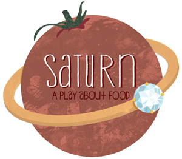

past performance | ||
|  |
SATURN (a play about food) In pursuit of new life, the young inheritors of a farm must piece together the past after a handful of extraordinary seeds puts the fate of the land and their marriage at stake. Riffing on the myth of Cronos, Jack and the Beanstalk and contemporary agricultural conundrums, SATURN is the fifth in a series of Planet Plays exploring the intersection between environmentalism and theater. | |
|
Created by Superhero Clubhouse | ||
upcoming performances |
|||
 |
|||
| EVQ Film Festival 2018 August 20-25 |
|||
performance archives |
|||
| 2018 | 2017 | 2016 | 2015 |
| 2014 | 2013 | 2012 | 2011 |
| 2010 | 2009 | 2008 | 2007 |